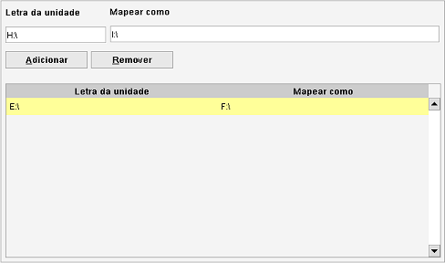

Mapas de unidades
Caminho de menu: Definições > Definições > Mapas de unidades
Caso a letra de uma unidade tenha mudado, pode mapeá-la no Data Crow. Isto garante que os caminhos de ficheiros armazenados no
Data Crow continuam válidos sem que tenha de os estar sempre a alterar. Esta é uma boa opção se utiliza o
Data Crow em diferentes sistemas onde a localização de unidades externas é diferente. Se os ficheiros foram
efetivamente movidos e quer ver esta alteração refletida no Data Crow considere usar o
Gestor de unidades.

Um exemplo de mapeamento seria: D:\ Mapear como E:\. O ficheiro D:\TEST\TEST.MP3 torna-se E:\TEST\TEST.MP3.
O caminho armazenado no Data Crow continua a ser D:\TEST\TEST.MP3 mas no ecrã verá E:\TEST\TEST.MP3
e será também usado em todas as ferramentas e operações.
Adicionar novo mapeamento
Introduza a letra da unidade no campo Letra da unidade e a nova letra, o mapa, no campo Mapear como. Clique emAdicionar.
Remover um mapeamento
Selecione o mapeamento que quer remover e clique em Remover.